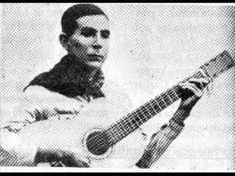

Emiliano R. Fernández, es el seudónimo del poeta y músico paraguayo Emiliano Fernández Rivarola (alteró el orden de sus apellidos en homenaje a su madre). Fue uno de los más prolíficos exponentes de la poesía popular del Paraguay y de la polka paraguaya.
Si bien existió una larga discusión sobre el lugar y la fecha de su nacimiento, los últimos y más importantes estudios indican que nació el 8 de agosto de 1894 en la compañía Yvysunú, de Guarambaré, Paraguay. Sus padres fueron Silvestre Fernández y Bernarda Rivarola.
Infancia y juventud[editar]
Es autor de más de 2.000 poemas. Si bien no se conocen con exactitud aspectos de su infancia, es sabido que los primeros años vivió en el pueblo de Ysaty, donde asistió a la escuela primaria hasta el quinto grado. Durante la revolución de 1904, que llevó a los liberales (miembros del Partido Liberal, agrupación política tradicional fundada en 1887) al poder, se estableció en la ciudad de Concepción (al Norte del Paraguay), donde posteriormente realizó el servicio militar.
Primeros pasos[editar]
A partir de la década de los años ‘20, espíritu bohemio y errante, comenzó a recorrer todos los rincones del Paraguay, escribiendo sus primeros versos que recitaba o cantaba acompañándose con su guitarra: “Primavera” (I y II), “Trigueñita” y “Pyhare amaguype”, publicados en “Okara poty kue mi”, revista de versos y canciones populares editada por largos años por la familia Trujillo. Posteriormente escribió dos de sus más populares composiciones de tono épico: “Che la reina” o “Ahama che china” y “Rojas Silva rekavo”.
Durante la Guerra del Chaco, entre Paraguay y Bolivia (1932-1935) formó parte como soldado del Regimiento de Infantería “13 Tuyutí”, escribiendo sus mejores versos entre las pausas de las batallas. Herido en el frente fue trasladado a Asunción. Como combatiente, en la Batalla de Nanawa, llegó a la cumbre del valor y el sacrificio. Durante el conflicto internacional, sus versos llegaron a los confines de la Patria, insuflando entusiasmo y convicción de victoria, lo cual le valió el apelativo de “Tirteo verde olivo”, expresión que se debe a Mauricio Cardozo Ocampo. A más de sesenta años de aquellos momentos, al escucharse cualquiera de sus canciones, una inevitable emoción patriótica embarga los sentimientos de sus ciudadanos. El erudito e intelectual Carlos Villagra Marsal lo considera el poeta popular por excelencia en el Paraguay. Con sus versos escritos en “jopará” (mezcla del guaraní y el castellano) supo auscultar como nadie el alma profunda de su pueblo y de su gente.
